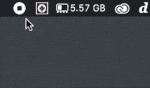
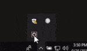
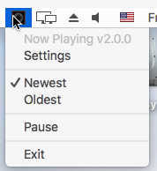

Usage¶
Start the Now Playing app from the location where you placed it. The app is controlled and configured by accessing the menu from the icon in the Windows system tray or Mac menu bar after configuration.
However, the first time you run the app a Settings window will appear. Populate the fields accordingly, and press Save. Once saved, the app will start polling for new songs. The app can be controlled and exited from…
the macOS menu bar icon:
{kind=link}
or the Windows system task tray:
{kind=link}
The menu bar:
{kind=link}
includes the following options:
Settings
Reconfigure the application after going through the initial configuration. See Settings for more information.
Oldest/Newest
Toggle that determines which mixing mode is currently used.
Oldest mode will pick the oldest track from all decks. This setting for DJs who are using the non-playing deck or will be manually controlling cross-fades.
Newest mode will pick the newest track from all decks. This setting is helpful for pre-built playlists or Serato’s AutoDJ capability.
Pause/Unpause - Determines whether Now Playing is looking for data and writing an updated title.
Exit - Stop and exit Now Playing